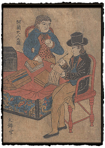
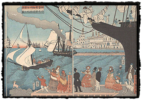

|
Foreigners and Disease
Page 2 of 2
The collection also includes two rare prints depicting the foreign residents of Nagasaki. The first, an anonymous print dating to ca. 1800, features a pair of Dutch gentlemen seated at a cloth-covered table, which appears to be a sea chest in disguise. The artist records with precision the novel appearance of these foreign men: the black topcoat and ruffled jabot, wavy hair curling under a tall hat, the long, straight nose. Seated in a wooden chair, a contrivance not found in most Japanese homes at that time, the man writes with a quill pen (not a brush!), moving from left to right in the Western fashion. The man opposite him holds a circular disk in one hand, with marks at the edges like a cracker or pastry. Baked goods were as exotic as the men and their costumes, in a culture without ovens or bread. It is likely that in making this image of foreigners at work, the artist relied on illustrations and engravings from the West for inspiration. Ironically, though there was clearly a demand for images of Nagasaki’s foreign residents, few artists seem to have had the opportunity to observe them at first hand.
In addition to the foreign dress worn by the two men, another novelty, a long spyglass, is held by one, pointing to the vista of Nagasaki harbor and sailing ships spread out below the veranda. The sign with its Western lettering, the elaborate chandelier, and wine glass visible on the table – all are elements emphasizing the sensational novelty to be encountered on a visit to the Maruyama district. In 1853, the arrival of Commodore Matthew Perry with his fleet of American
naval ships signaled the end of Japan's long isolation. In 1854, treaties were concluded
Like the prints of Westerners in Nagasaki, these images confer a certain degree of respect on the foreigners and their customs — playing down the potentially fearful aspects of something unknown and possibly threatening. These images tend to focus on ordinary activities about which the Japanese population might be curious: people eating and drinking, smoking pipes, playing music, or writing. Foreign women, prohibited from living at Dejima, are represented in many images from this time, such as this fanciful depiction of a California port, dating to 1862. The closely observed details of the women's costumes, including fancy hats and lacy mantillas, are, like the buildings and ship that crowd the horizon, likely copied directly from Western newspaper illustrations. Two favorite sources were the London Illustrated News and the American Frank Leslie's Illustrated Newspaper.
|
|||